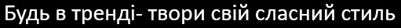

Roman Kozak
підвіски
Трикутний кулон з жовтим листя ⠀ Раді вам запрезентувати нову форму кулонів-контурів - трикутну. Вона є невеликою і доволі витягнутою, що додає їй особливої елегантності.
200 грн
